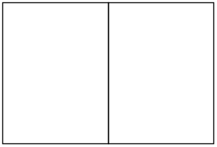
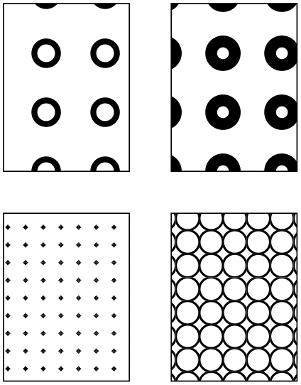

The TikZ and PGF Packages
Manual for version 3.1.10
The Basic Layer
109 Patterns¶
109.1 Overview¶
There are many ways of filling a path. First, you can fill it using a solid color and this is also the fastest method. Second, you can also fill it using a shading, which means that the color changes smoothly between two (or more) different colors. Third, you can fill it using a tiling pattern and it is explained in the following how this is done.
A tiling pattern can be imagined as a rectangular tile (hence the name) on which a small picture is painted. There is not a single tile, but (conceptually) an infinite number of tiles, all showing the same picture, and these tiles are arranged horizontally and vertically to fill the plane. When you use a tiling pattern to fill a path, what happens is that the path clips out a “window” through which we see part of this infinite plane.
Patterns come in two versions: inherently colored patterns and form-only patterns. (These are often called “color patterns” and “uncolored patterns”, but these names are misleading since uncolored patterns do have a color and the color changes. As I said, the name is misleading…) An inherently colored pattern is just a colored tile like, say, a red star with a black outline. A form-only pattern can be imagined as a tile that is a kind of rubber stamp. When this pattern is used, the stamp is used to print copies of the stamp picture onto the plane, but we can use a different stamp color each time we use a form-only pattern.
pgf provides a special support for patterns. You can declare a pattern and then use it very much like a fill color. pgf directly maps patterns to the pattern facilities of the underlying graphic languages (PostScript, pdf, and svg). This means that filling a path using a pattern will be nearly as fast as if you used a uniform color.
There are a number of pitfalls and restrictions when using patterns. First, once a pattern has been declared, you cannot change it anymore. In particular, it is not possible to enlarge it or change the line width. Such flexibility would require that the repeating of the pattern were not done by the graphic language, but on the pgf level. This would make patterns orders of magnitude slower to produce and to render. However, pgf does provide a more-or-less successful emulation of “mutable” patterns, although internally, a new (fixed) instance of a pattern is declared when the parameters of a pattern change.
Second, the phase of patterns is not well-defined, that is, it is not clear where the origin of the “first” tile is. To be more precise, PostScript and pdf on the one hand and svg on the other hand define the origin differently. PostScript and pdf define a fixed origin that is independent of where the path lies. This has the highly desirable effect that if you use the same pattern to fill multiple paths, the outcome is the same as if you had filled a single path consisting of the union of all these paths. By comparison, svg uses the upper-left (?) corner of the path to be filled as the origin. However, the svg specification is a bit vague on this question.
109.2 Declaring a Pattern¶
Before a pattern can be used, it must be declared. The following command is used for this:
-
\pgfdeclarepatternformonly[⟨variables⟩]{⟨name⟩}{⟨bottom left⟩}{⟨top right⟩}{⟨tile size⟩}{⟨code⟩} ¶
This command declares a new form-only pattern. The ⟨name⟩ is a name for later reference. The two parameters ⟨lower left⟩ and ⟨upper right⟩ must describe a bounding box that is large enough to encompass the complete tile.
The size of a tile is given by ⟨tile size⟩, that is, a tile is a rectangle whose lower left corner is the origin and whose upper right corner is given by ⟨tile size⟩. This might make you wonder why the second and third parameters are needed. First, the bounding box might be smaller than the tile size if the tile is larger than the picture on the tile. Second, the bounding box might be bigger, in which case the picture will “bleed” over the tile.
The ⟨code⟩ should be pgf code than can be protocolled. It should not contain any color code.

\usetikzlibrary {patterns}
\pgfdeclarepatternformonly{stars}
{\pgfpointorigin}{\pgfpoint{1cm}{1cm}}
{\pgfpoint{1cm}{1cm}}
{
\pgftransformshift{\pgfpoint{.5cm}{.5cm}}
\pgfpathmoveto{\pgfpointpolar{0}{4mm}}
\pgfpathlineto{\pgfpointpolar{144}{4mm}}
\pgfpathlineto{\pgfpointpolar{288}{4mm}}
\pgfpathlineto{\pgfpointpolar{72}{4mm}}
\pgfpathlineto{\pgfpointpolar{216}{4mm}}
\pgfpathclose%
\pgfusepath{fill}
}
\begin{tikzpicture}
\filldraw[pattern=stars] (0,0) rectangle
(1.5,2);
\filldraw[pattern=stars,pattern color=red]
(1.5,0) rectangle
(3,2);
\end{tikzpicture}
The optional argument ⟨variables⟩ consists of a comma separated list of macros, registers or keys, representing the parameters of the pattern that may vary. If a variable is a key, then the full path name must be used (specifically, it must start with /). As an example, a list might look like the following: \mymacro,\mydimen,/pgf/my key. Note that macros and keys should be “simple”. They should only store values in themselves.
The effect of ⟨variables⟩, is the following: Normally, when this argument is empty, once a pattern has been declared, it becomes “frozen”. This means that it is not possible to enlarge the pattern or change the line width later on. By specifying ⟨variables⟩, no pattern is actually created. Instead, the arguments are stored away (so the macros, registers or keys do not have to be defined in advance).
When the fill pattern is set, pgf checks if the pattern has already been created with the ⟨variables⟩ set to their current values (pgf is usually “smart enough” to distinguish between macros, registers and keys). If so, this already-declared-pattern is used as the fill pattern. If not, a new instance of the pattern (which will have a unique internal name) is declared using the current values of ⟨variables⟩. These values are then saved and the fill pattern set accordingly.
The following shows an example of a pattern which varies according to the values of the macro \size, the key /tikz/radius, and the TeX dimension \thickness.

\usetikzlibrary {patterns}
\pgfdeclarepatternformonly[/tikz/radius,\thickness,\size]{rings}
{\pgfpoint{-0.5*\size}{-0.5*\size}}
{\pgfpoint{0.5*\size}{0.5*\size}}
{\pgfpoint{\size}{\size}}
{
\pgfsetlinewidth{\thickness}
\pgfpathcircle\pgfpointorigin{\pgfkeysvalueof{/tikz/radius}}
\pgfusepath{stroke}
}
\newdimen\thickness
\tikzset{
radius/.initial=4pt,
size/.store in=\size, size=20pt,
thickness/.code={\thickness=#1},
thickness=0.75pt
}
\begin{tikzpicture}[rings/.style={pattern=rings}]
\filldraw [rings, radius=2pt, size=6pt] (0,0) rectangle
+(1.5,2);
\filldraw [rings, radius=2pt, size=8pt] (2,0) rectangle
+(1.5,2);
\filldraw [rings, radius=6pt, thickness=2pt] (0,2.5) rectangle
+(1.5,2);
\filldraw [rings, radius=8pt, thickness=4pt] (2,2.5) rectangle
+(1.5,2);
\end{tikzpicture}
-
\pgfdeclarepatterninherentlycolored[⟨variables⟩] {⟨name⟩} {⟨lower left⟩} {⟨upper right⟩} {⟨tile size⟩} {⟨code⟩} ¶
This command works like \pgfdeclarepatternuncolored, only the pattern will have an inherent color. To set the color, you should use pgf’s color commands, not the \color command, since this fill is not protocolled.
\usetikzlibrary {patterns}
\pgfdeclarepatterninherentlycolored{green
stars}
{\pgfpointorigin}{\pgfpoint{1cm}{1cm}}
{\pgfpoint{1cm}{1cm}}
{
\pgfsetfillcolor{green!50!black}
\pgftransformshift{\pgfpoint{.5cm}{.5cm}}
\pgfpathmoveto{\pgfpointpolar{0}{4mm}}
\pgfpathlineto{\pgfpointpolar{144}{4mm}}
\pgfpathlineto{\pgfpointpolar{288}{4mm}}
\pgfpathlineto{\pgfpointpolar{72}{4mm}}
\pgfpathlineto{\pgfpointpolar{216}{4mm}}
\pgfpathclose%
\pgfusepath{stroke,fill}
}
\begin{tikzpicture}
\filldraw[pattern=green stars] (0,0) rectangle
(3,2);
\end{tikzpicture}
109.3 Setting a Pattern¶
Once a pattern has been declared, it can be used.
-
\pgfsetfillpattern{⟨name⟩}{⟨color⟩} ¶
This command specifies that paths that are filled should be filled with the “color” by the pattern ⟨name⟩. For an inherently colored pattern, the ⟨color⟩ parameter is ignored. For form-only patterns, the ⟨color⟩ parameter specifies the color to be used for the pattern.
\pgfpathlineto {\pgfpointpolar {288}{4mm}} \pgfpathlineto
{\pgfpointpolar {72}{4mm}} \pgfpathlineto {\pgfpointpolar
{216}{4mm}} \pgfpathclose \pgfusepath {stroke,fill} }
\begin{tikzpicture}
\pgfsetfillpattern{stars}{red}
\filldraw (0,0) rectangle
(1.5,2);
\pgfsetfillpattern{green
stars}{red}
\filldraw (1.5,0) rectangle
(3,2);
\end{tikzpicture}